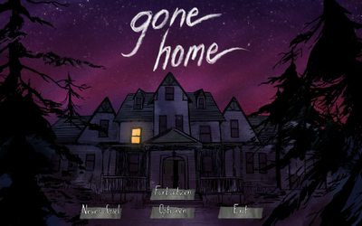
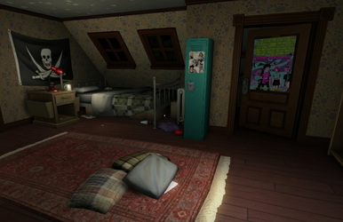
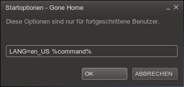

Gone Home
Dieser Artikel wurde für die folgenden Ubuntu-Versionen getestet:
Dieser Artikel ist mit keiner aktuell unterstützten Ubuntu-Version getestet! Bitte diesen Artikel testen und das getestet-Tag entsprechend anpassen.
Zum Verständnis dieses Artikels sind folgende Seiten hilfreich:
Gone Home  - Nach einem einjährigen Auslandsaufenthalt kehrt Kaitlin Greenbriar nach Hause zurück. Jedoch findet sie ein verlassenes Haus vor, und ihre gesamte Familie mit Schwester Sam und Eltern ist verschwunden. Irgendetwas scheint nicht zu stimmen ...
- Nach einem einjährigen Auslandsaufenthalt kehrt Kaitlin Greenbriar nach Hause zurück. Jedoch findet sie ein verlassenes Haus vor, und ihre gesamte Familie mit Schwester Sam und Eltern ist verschwunden. Irgendetwas scheint nicht zu stimmen ...
In der Atmosphäre der 1990er erforscht man das verlassene Haus, durchstöbert den persönlichen Besitz der Familie Greenbriar und liest auf der Suche die Briefe und Notizen, welche man findet. Einzelne Fundstücke lösen dabei einen Eintrag aus Sams Tagebuch aus, der mehr über ihr Leben erzählt.
|  |  |
| Menü | Spielszene |
Installation¶
Entwicklerseite¶
Nach dem Erwerb des Spiels über die Entwicklerseite erhält man einen Link zur persönlichen Seite des Humble Stores. Auf dieser Seite wird ebenfalls ein Key für Steam zur Verfügung gestellt.
Von dieser Seite lädt man das Archiv herunter und entpackt es [1] z.B. nach ~/Spiele/ oder in einen beliebigen anderen Ordner. Auf Wunsch kann man noch einen Menüeintrag vornehmen [3].
Steam¶
Nachdem der Titel über Steam oder den Client erworben wurde, kann das Programm anschließend über letzteren installiert [4] werden. Ebenso kann man das Spiel über die Entwicklerseite erwerben und erhält dort den Steam-Key.
Spielstart¶
Bei der Installation über die Entwicklerseite kann man das Spiel aus dem entpackten Verzeichnis (z.B. GoneHome v.1.1) heraus über
LC_ALL=C ./GoneHome.x86
bzw.
LC_ALL=C ./GoneHome.x86_64
für 64-Bit-Systeme gestartet [2] werden.
Das Präfix LC_ALL=C ist notwendig auf nicht-englischsprachigen Systemen, damit als Terminalsprache Englisch eingestellt wird, da Gone Home nicht mit anderssprachigen Einstellungen zurechtkommt.
|  |
| Steam |
Steam¶
In Steam muss man vor dem ersten Spielstart zwingend einen  Rechtsklick auf das Spiel in der Bibliothek ausführen und den Menüeintrag "Eigenschaften -> Allgemein -> Startoptionen festlegen..." anwählen. Dort trägt man als Startkommando
Rechtsklick auf das Spiel in der Bibliothek ausführen und den Menüeintrag "Eigenschaften -> Allgemein -> Startoptionen festlegen..." anwählen. Dort trägt man als Startkommando
LANG=en_US %command%
ein und klick auf "Ok" und schließt den Dialog wieder.
Der Zusatz LC_ALL=C bzw. LANG=en_US ist zwingend Voraussetzung, wenn man ein nicht englischsprachiges System installiert hat. Vergisst man das Setzen, fällt man direkt nach dem Start des Spiels durch den Fußboden und sieht nur ein schwarzes Nichts mit einem weißen Punkt (siehe Fehlerbeschreibung ). Das Spiel ist dann unspielbar.
Nach dem ersten Spielstart wird der Ordner .config/unity3d/The Fullbright Company/Gone Home/ im Homeverzeichnis angelegt.
Spielsprache¶
Das Spiel ist standardmäßig in Englisch, sowohl von der Sprachausgabe als auch vom Text. Es gibt aber eine deutsche Übersetzungen, die zumindest die Menüdialoge und In-Game-Texte per Overlay-Dialog auf Deutsch anzeigt sowie unter der Sprachausgabe Untertitel einblendet.
Die Auswahl an verschiedenen Übersetzungen (nicht nur Deutsch) findet man auf der Webseite . Man wählt dort die jeweilig gewünschte Übersetzung aus und lädt das zugehörige Archiv herunter. Danach entpackt man dieses [1] und kopiert den ganzen Inhalt nach ~/.config/unity3d/The Fullbright Company/Gone Home/Text/Localized/.
Tastenkürzel¶
Im Spiel selbst kann man sich zum einen über die Tastatur bewegen, aber auch diverse Menüs und das Inventar aufrufen. Die Tastenkürzel sind wie folgt:
| Tastenkürzel | |
| Taste(n) | Funktion |
| Esc | Menü |
 | Charakter steuern |
| I / 1 | Gegenstand |
| M / 2 | Karte |
| J / 3 | Tagebuch |
| C / Strg | Kriechen |
⇧ /  | Aus der Nähe betrachten. |

Infobox¶
| Gone Home | |
| Genre: | Adventure (hauptsächlich Erkundung) |
| Sprache: | , weitere durch Untertitel und Textoverlays |
| Veröffentlichungen: | 2013 |
| Entwickler: | The Fullbright Company |
| Systemvoraussetzungen: | 1,80 GHz Prozessor / 2 GB Arbeitsspeicher / 2 GB Festplattenplatz / Intel HD 4000 Grafikkarte / glibc 2.11+ |
| Medien: | Download/Steam |
| Strichcode / EAN / GTIN: | - |
| Läuft mit: | nativ |
 - Blogbeitrag, 01/2014
- Blogbeitrag, 01/2014- Erstellt mit Inyoka
-
 2004 – 2017 ubuntuusers.de • Einige Rechte vorbehalten
2004 – 2017 ubuntuusers.de • Einige Rechte vorbehalten
Lizenz • Kontakt • Datenschutz • Impressum • Serverstatus -
Serverhousing gespendet von